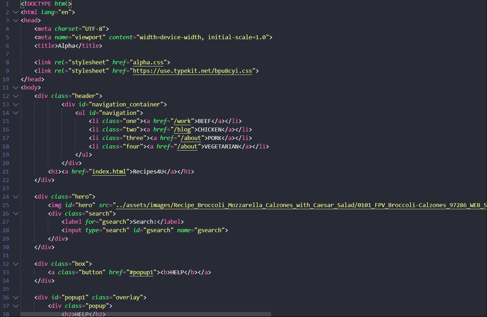
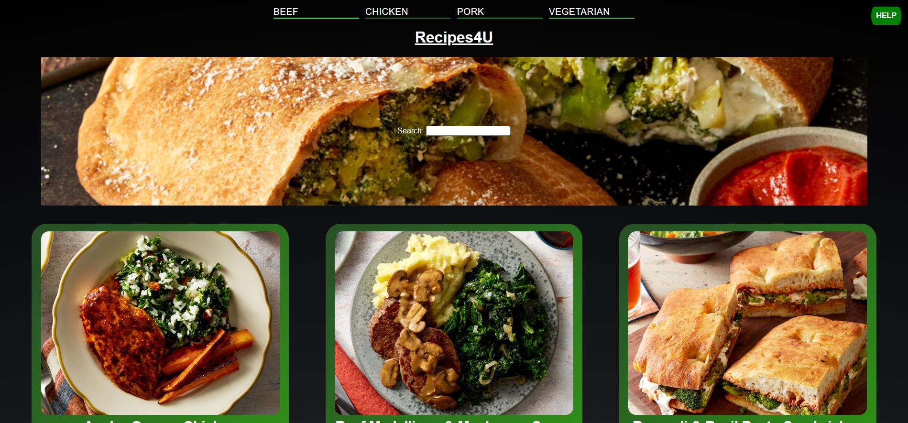
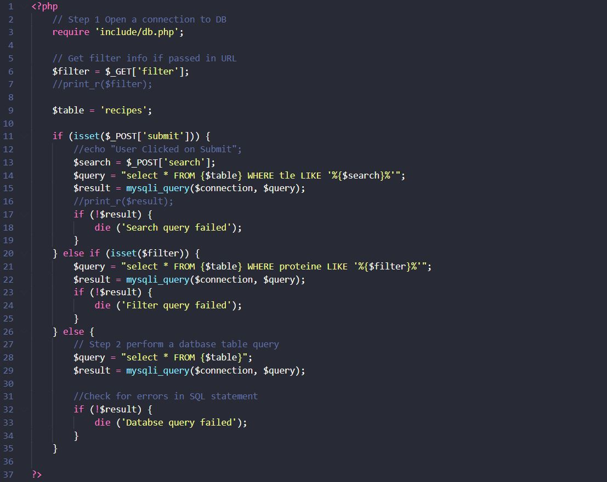

The Overview
I created a website that displays recipes using PHP and CSS driven code. The website is called Recipes4U and allows users to view step by step instructions for a selected recipe. Users are able to search for specific recipes and filter based on the recipes contained protein. It was designed to be clean and easy to understand. The website is responsive on all major breakpoints. The project was completed within ten weeks.
Background/Description/Timeline/Purpose
I was presented with the task of creating a database-driven recipe website. The website should use PHP and CSS code to
draw from a created database containing recipe information to responsively create the information depicted on the page.
User’s should be able to search for recipes using a search bar or filter recipes based on the protein they contain. The
project was given ten weeks to complete.
This project was given the name Recipes4U. It exists to create a space for users to easily access a multitude of recipes
digitally instead of piling up binders or web folders of found recipes online. The website creates a space where one can
go to for many recipes easily with no hassle.
This project will be successful if the user is able to successfully access recipes, filter through recipes, and search
for specific recipes using the search bar. The project will also have to operate successfully on all device breakpoints.
Process and Insight
I created Recipes4U in three main stages, an alpha, beta, and final iteration. Of course, even before the alpha was
created I mocked up wireframes and a style guide to nail out the color choices and font styles. The name “Recipes4U”
didn’t come into play until the beta iteration.
I created the wireframes with the idea of a columned layout that would change based on user screen sizes. Large screens displayed three columns of recipes, medium-sized screens displayed two, and small screens only display one column. For the style tile, I centered my aesthetic around a fresh and earthy feeling. I wanted users to think the website felt
clean and professional.


The alpha pages were created with pure HTML and CSS. It was done to create a solid foundation for the later implementation of PHP. The project is a total of two pages, being the home and the recipes page.
The beta iteration was the first that introduced PHP. It connected the database to the website. The recipe information was given to me by my professor prior to beginning the project. A group of my peers translated that information into an excel document and distributed it to all of us in the class. I edited the table to rid of small errors and implemented it into Recipes4U using the PHPMyAdmin functions. The database allowed the beta iteration to responsively create recipe thumbnails for all the recipes and depict them on the home screen.
The final project finished the rest of the database implementation. This included working filters, a working search function, and a recipe page that would build depending on which recipe thumbnail was clicked. An added feature was the responsive text on the home page that displayed what recipes were being shown(i.e. filtered, all, or found from search). I also decided to take out the large banner image as I felt the recipes were being pushed below user screens therefore not giving enough attention to them.
I am most proud of the recipe page that I designed, I believe it to be clean and easy to follow. I also managed to implement the banner image that I had to forego on the home page here. The text stays inline with the images and the image sizes are all consistent.
View Recipes4U here! View a video of the working website here!I believe Recipes4U to be a success. I achieved everything I set out to do with minimal need for compromise. I created a responsive web page that draws from a database to create its contents. Users are able to search and filter recipes as they see fit. I created the space I set out to create from the beginning of this project.